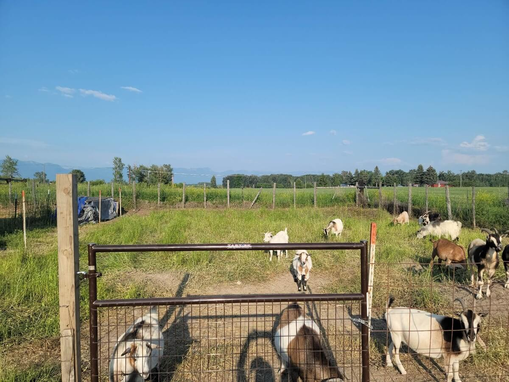
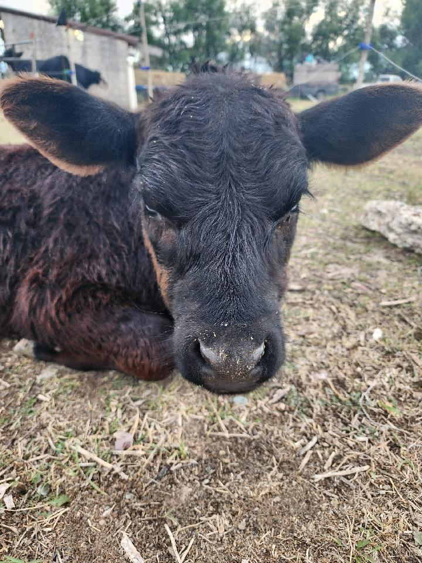

Welcome to Whoa Mule Ranch
Whoa Mule Ranch is a family ranch providing fresh eggs, chicks, livestock, and natural pasture solutions. We raise our animals with care and enjoy serving our local community through quality ranch products and helpful services.
Featured Offerings
Browse some of the products and services we offer. Use the buttons below to view different categories and learn more about what is currently available from the ranch.
Loading ranch offerings...
Current Availability
Loading current availability...
Check Availability
Availability can change throughout the year. Reach out to learn what is currently available for eggs, chicks, livestock, and goat rentals.
About the Ranch
Whoa Mule Ranch is a family run ranch focused on raising quality animals and providing helpful services to the local community. We take pride in caring for our animals and offering ranch products families can trust.
Ranch Highlights
